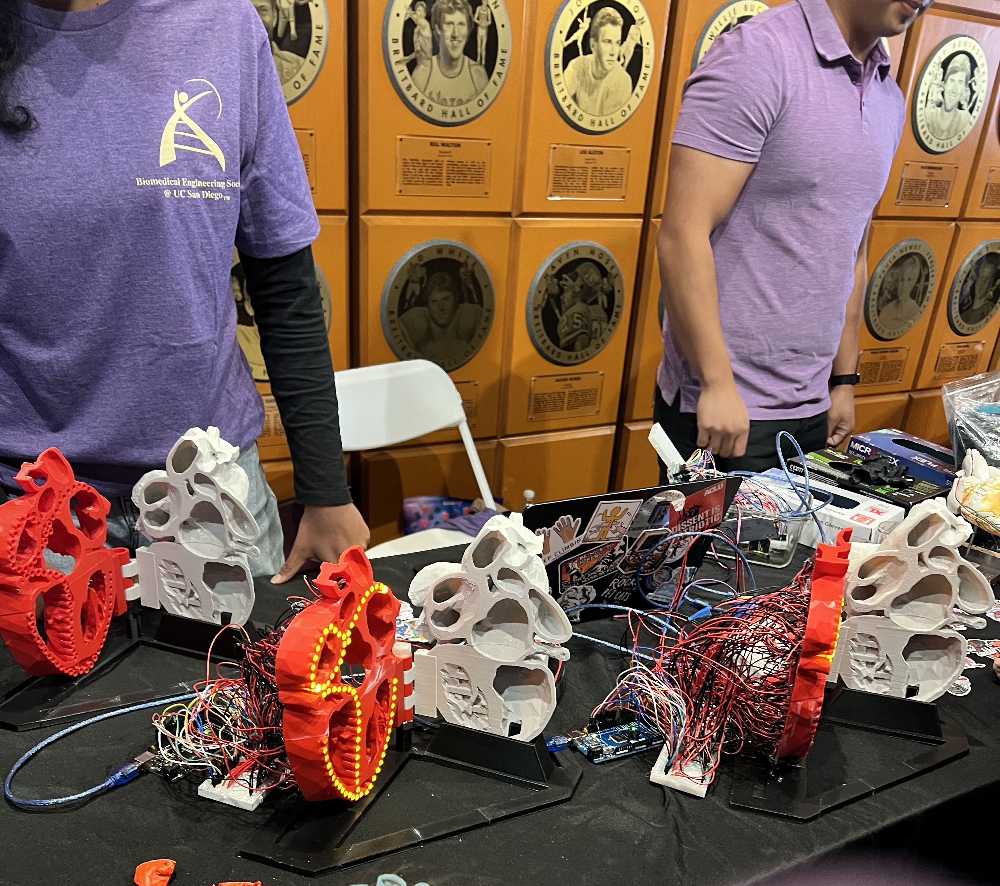

Heart conduction Visualization

The LED Hearts were a portion of the Continuing Stem Education Project from the Outreach Committee of the Biomedical Engineering Society here at UCSD. They were an exciting project to help work on as they combined arduino, 3d printing, wiring, and timings to create something which hopefully will inspire a younger generation of scientists! I contributed all of the code managing led timings and sequences on the microcontroller, which can be found on the project Github Page.
Starling Sim
Work in progress
This project I am undertaking for fun after having seen the flocking behavior of starlings, and I thought it would be an interesting thing to try to simulate probabaliticaly. Though incomplete, it has already been a fun project to try. The current code for it can be found on it's Github Page.
Seamount Identification

As Part of the Sandwell Lab at Scripps Institute for Geophysics and Planetry Physics, I am currently working to develop a ML Pipeline to speed up the currently highly labor intensive process of manualy identifying seamounts in satelite derived gravity data (VGG). Above is an example of the current preprocessing pipeline we use to smooth and amplify potential seamounts. For more information on this type of work, see our Website.